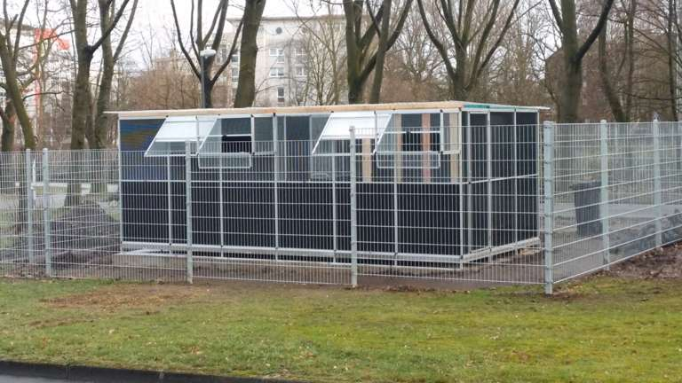

Das erste Stadttaubenhaus in Marl und der Weg dorthin
Das Taubenhaus
Alternativen waren:
Umbau eines Seecontainers, ein Blockhaus oder ein Bauwagen.
Die Mitglieder haben sich für eine offene Voliere, von Volierebau Bönninghaus in Recklinghausen, entschieden.
Dieser Vorschlag wurde der Stadt Marl vorgelegt und genehmigt.
Nach Findung eines Geländes und Erledigung aller administrativen Punkte, konnte mit dem Bau im Januar 2020 begonnen werden.
Die Bodenplatte wurde durch die Bauunternehmung Annuss aus Marl gebaut und ist somit ein gutes und stabiles Fundament für unser Projekt.
Bei allen Arbeiten wurden wir vom Zentralen Betriebshof der Stadt Marl, kurz ZBH, sowohl sachlich, wie auch fachlich, voll umfänglich unterstützt.
Grundstück, Zaun und Strom wurden uns von der Stadt Marl zur Verfügung gestellt.
Das Taubenhaus wurde Ende Januar, im Beisein des Bürgermeister Werner Arndt, eingeweiht.
Der Innenausbau erfolgte im Februar 2020 und die ersten Stadttauben sind schon eingezogen.
Und das Wichtigste zum Schluss.
Die Würdigung der Aktiven.
Denn ohne diese Menschen ist ein solches Projekt nicht möglich. Mit Ihrem Einsatz von unzähligen Stunden, etlichen Tagen und Wochenenden, haben die aktiven Mitglieder und die zahlreichen Unterstützer zum Gelingen des Tauben-Projektes beigetragen.
Der Weg zum Ziel

Über “DAS PROBLEM STADTTAUBE“ braucht man nicht mehr zu reden oder zu schreiben. Alle Argumente, Für und Wider, liegen auf dem Tisch und sind bekannt.
So hat der Verein Stadttauben Marl sich an zwei Grundsätze gehalten. Handeln statt meckern Wenn wir Menschen nicht helfen, wer dann
Das Um- und Brut Feld unserer Stadttauben sind, ein Einkaufszentrum, der Marler Stern, mehrere Wohneinheiten, ein Busbahnhof und ein leerstehendes Parkhaus. Dies gab immer Anlass zu Ärger und Protesten gegen die Tauben.
Als der Marler Stern renoviert und erneuert wurde, haben die Verantwortlichen das Problem erkannt.
So kam es zu einer Kooperation zwischen der Stadt Marl, dem City-Management und unserem Verein. Nachdem die Problematik verstanden war, haben sich alle Beteiligten den genannten Grundsätzen verpflichtet.
Die örtliche Presse wurde auf das Projekt “Bau eines Taubenhauses“ aufmerksam.
Durch zahlreiche Publikationen in der Marler Zeitung wurde das Projekt bekannt.
Wenn auch noch nicht alle Ziele erreicht sind, so bekamen wir, durch die Marler Bürger*innen, eine Unterstützung, die unsere Erwartungen übertrafen.
Fazit: Wir haben gehandelt und wir haben geholfen.
Für die breite Unterstützung sagen wir Danke im Namen der Stadttauben und hoffen dass die Unterstützung weiterhin anhält.
- Bootstrap 4.3.1
- jQuery 3.4.1